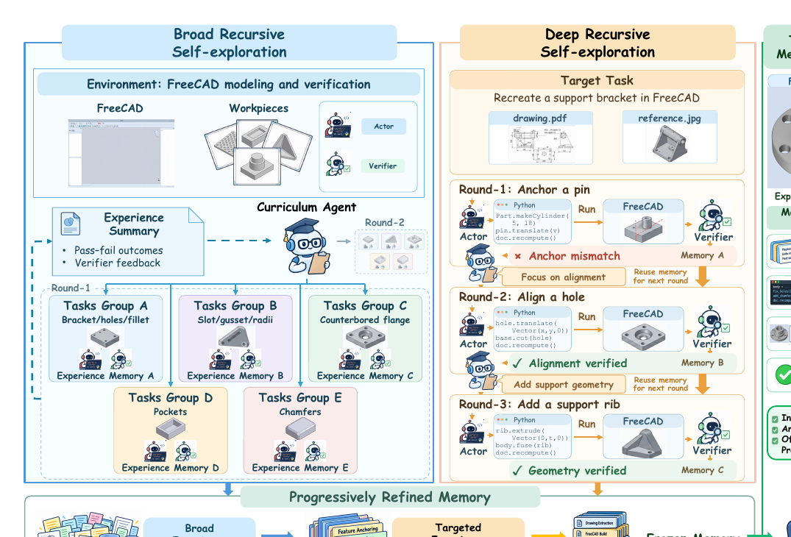

01研究背景与问题定义
进入陌生软件环境后，智能体即使知道通用操作，也未必了解具体版本的隐藏约束：某种导出设置是否有效、任务结果怎样验证、失败由哪条条件触发。只在正式任务中试错，既昂贵又容易反复丢失经验；直接写反思笔记，又可能把未验证猜测存成事实。RSIAgent 将主动练习、环境取证和记忆维护组织成一个训练外适应过程。
课程代理提出练习，执行代理探索，独立验证代理检查可见结果；经过验证的经验更新外部记忆。探索分广度与深度，完成后冻结记忆，再用于目标执行。需要提前说明，论文的参考实现是目标条件化的：目标查询会指导探索，深度阶段也可能练习目标本身，所以它不是在完全不知道下游任务时独立学到一套通用能力。
| 问题 | 仅多跑正式任务的不足 | 方法改变 |
|---|---|---|
| 缺少环境知识 | 重复踩同样接口和流程陷阱。 | 主动生成不同方向的练习，扩大覆盖。 |
| 经验不够可信 | 执行者的成功自述可能与实际产物不符。 | 验证者直接检查环境证据，隔离执行者私有思考与记忆。 |
| 已有知识只覆盖容易情况 | 广度采样难碰到隐藏约束和边界。 | 顺序深挖缺口，每次验证后再更新记忆和课程。 |
“递归自改进”的持久对象是外部环境记忆，基础模型不训练。它借额外探索预算换取后续更好的执行条件，因此评价时必须分清学习阶段、冻结阶段，以及新知识到底有多接近测试目标。
02方法与技术路线
三个代理分工贯穿两阶段，而不是三个阶段各自独立。验证反馈约束写入，记忆又影响下一次任务和行动；测试时关闭课程和记忆写入，保留执行—验证循环。
BRS · 广度递归探索
课程提出多方向项目 → 多个 Actor 并行执行 → Verifier 看环境结果 → 汇总已知与缺口。
DRS · 深度递归探索
课程选择挑战 / 隐藏约束 → 顺序执行和验证 → Actor 修订或删除旧知识 → 再决定下一项练习。
Actor 的写入责任
将验证后的流程、脚本、条件—动作—后果和失败经验合并到持久记忆。
Verifier 的证据边界
看执行结果、界面和可观察产物；不读 Actor 私有推理与记忆，返回判断及理由。
目标执行 · 只读复用
Actor 读取冻结程序与约束，Verifier 继续检查任务是否满足；课程及记忆更新禁用。
三种角色：提任务、做动作和确认结果分开
课程代理依据目标、已有经验和探索结果寻找前置技能、信息量大的变体及失败压力测试。它决定学什么与何时停止，而非只按一个固定题目列表抽样。Actor 则负责工具动作与记忆整合，持久经验包括可复用程序、脚本及条件约束。
Verifier 直接检查执行结果、界面状态和其他可见证据，不依赖 Actor 的私有解释与记忆。这个隔离降低同一错误叙事同时支配执行和验收的风险，但结果仍由模型判断，不能等同官方真值。被错误验证的经验会进入后续课程，因而写入可靠性决定整个递归链是否受益。
广度到深度：覆盖与边界需要不同调度
BRS 每轮给出多个方向并行执行和验证，汇总之后再寻找知识缺口，主要负责快速铺开环境结构。参考设置有名义八个探索项目、最多四个并行，预算在完成波次之间检查，不中途打断正在运行项目。名义预算因此不必等于精确固定调用量。
DRS 按顺序选择困难任务，利用上一步刚写入的知识继续追问边界。成功不是自动停止条件，课程还要判断是否值得进一步挑战。它也可能包括目标练习；一旦已针对目标调试，最终冻结运行是在复用目标相关研究成果，而不是纯粹零样本测试。
冻结复用：停止更新并不消除前期适应成本
探索完成后，记忆冻结，环境重置，Actor 在正式执行中只读已有知识，Verifier 继续确认要求是否满足。课程不再出题，记忆也不再接收测试执行反馈。这使最终任务轨迹与写入过程区分开。
然而知识可以来自目标条件化探索与此前尝试，冻结只规定最终执行的更新权限，不能把前面付出的探索、目标练习或选择检查点从成本和证据条件中删掉。部署表现需要同样适应预算的基线，才能分辨方法设计与更多练习的作用。
论文原始结构图 · 点击对照

03实验设计与结果分析
汇总分数提高了多少，比较对象是否完全匹配
OSWorld 82 个离线任务，ALE 67 个 Near-term 任务；按附录记录合成的报告结果。
| 评测 | 无 RSI Partial | 有 RSI Partial | 无 / 有 RSI Binary |
|---|---|---|---|
| OSWorld | 71.97% | 78.98% | 37.80% / 42.68% |
| ALE | 83.75% | 84.82% | 49.25% / 50.75% |
OSWorld 的改善大于 ALE，符合后者基线已较高、剩余缺口更小的表面模式。但这不是所有题都重新做过的完整匹配评测：OSWorld 只用 41 条报告 RSI 结果替换基线，其余保留；ALE 用 19 条 RSI 加 48 条基线，记录还含重试、局部修正等资格条件。
不同公开系统保留各自 harness 与预算，论文也明确比较协议未完全匹配。因此可以说报告汇总有所提高，不能据此断言同预算全面超过其他模型。ALE Binary 的 50.75% 仍低于 GPT-6 Astra 参考的 52.24%，Partial 名次不能替代所有指标。
广度与深度是否互补
四个 OSWorld 任务；来自为改进而选出的探索 cohort，完整 RSI 为两次历史冻结评估平均，非全基准等预算消融。
| 配置 | 四任务平均 Partial | 可作何种证据 |
|---|---|---|
| 只做深度 | 56.50% | 空记忆上聚焦练习可能过窄。 |
| 只做广度 | 65.52% | 广泛经验本身已有效。 |
| 完整两阶段 | 74.54% | 在这组已选任务上组合最好。 |
这组结果提供阶段互补的案例级证据：先建立环境面，再补具体约束，优于从空记忆直接深挖。它不能精确估计广度或深度的总体因果贡献，因为选择队列、历史运行与不同阶段预算限制都影响结果。
论文没有给出覆盖全部任务的统一探索成本—成功率曲线。若只看冻结执行分数，就会掩盖程序发现、失败练习和验证已经花费的计算。
04贡献、局限与综合评价
核心贡献：把适应拆成经验获取与经验使用
RSIAgent 最值得学习的设计，是把主动课程和环境证据放在记忆写入之前：不是见到日志就总结，而是通过练习补空白，再用验证后的结果更新程序与条件。广度并行、深度串行的安排也有清晰的信息理由：覆盖可以分散，边界修订依赖最新知识。
当前实证更接近目标条件化研究，而非普遍自主进化
目标参与出题、部分目标练习和未完全匹配的历史汇总，使“学到环境通用知识”与“针对当前任务做了充分研究”难以分开。两者都可能有实际价值，但对可迁移能力的结论不同。验证者误判又会改变后续课程，局部错误可能被反复强化。
最有区分力的设计是预先固定探索预算，在一组训练目标上构造记忆，冻结后评估完全新目标，并与同预算直接尝试及独立验证版本比较。如果收益跨目标保持，便支持通用环境知识；若主要依赖目标练习，则应将其定位为有效的测试期适应。
综合判断，这是一套机制清楚的主动环境学习框架，也提供有启发的经验演化记录。现有数字说明在特定探索和报告条件下可以改善任务执行，尚不足以建立等预算、全面泛化的递归自改进结论；区分这两层，反而更能看清方法真正可复用的部分。